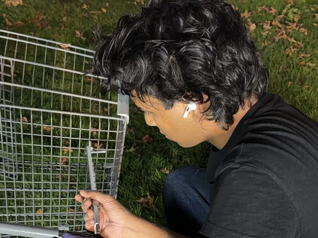
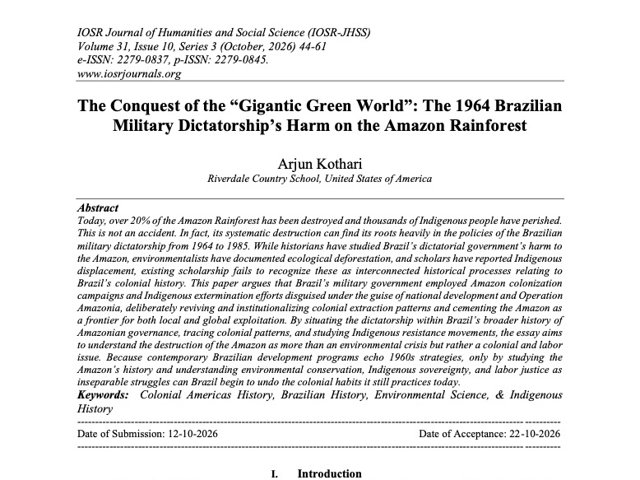

Shopping Cart Garden
2026
Low-cost mobile gardens bringing fresh food to local communities that lack access
New York CityBuild

Go Gardens! is a social enterprise solution that empowers and equips local communities to feed and nourish themselves with fresh, healthy, and affordable produce through portable shopping cart gardens, giving people greater control over their own food production.
- Role
- [ ]
- Location
- New York City
- Year
- 2026
- Program
- Harvard Crimson Business Competition, Food Insecurity Challenge
Go Gardens! deck (PDF)
embARC
2025
[One-line description]
Berkeley, CAUrban design
[Short intro]
Final project, Community Development
My pavilion is a circular structure that was designed to exemplify community development. The pavilion, inspired by my two abstractions of growth and spikes, shows the harsh reality of the life of an egg, as an embodiment of modern-day society: humans grow up only to be engulfed by societal norms, losing their individuality. My pavilion promotes community engagement by allowing people of all ages and abilities to enjoy amenities such as a bonfire pit, an accessibility ramp, benches, and an open field, in order to escape from society, work, classes, stress, and the world of conformity and enjoy the moment. The open field around the main structure encircled by bushes, juxtaposes a natural escape to the bustling city of Berkeley.
- Role
- [ ]
- Location
- Berkeley, CA
- Year
- 2025
- Tools
- Rhino 8, Adobe Illustrator
The Conquest of the “Gigantic Green World”: The 1964 Brazilian Military Dictatorship’s Harm on the Amazon Rainforest
2026
IOSR Journal of Humanities and Social Science
IOSR-JHSS

Today, over 20% of the Amazon Rainforest has been destroyed and thousands of Indigenous people have perished. This is not an accident. In fact, its systematic destruction can find its roots heavily in the policies of the Brazilian military dictatorship from 1964 to 1985. While historians have studied Brazil’s dictatorial government’s harm to the Amazon, environmentalists have documented ecological deforestation, and scholars have reported Indigenous displacement, existing scholarship fails to recognize these as interconnected historical processes relating to Brazil’s colonial history. This paper argues that Brazil’s military government employed Amazon colonization campaigns and Indigenous extermination efforts disguised under the guise of national development and Operation Amazonia, deliberately reviving and institutionalizing colonial extraction patterns and cementing the Amazon as a frontier for both local and global exploitation. By situating the dictatorship within Brazil’s broader history of Amazonian governance, tracing colonial patterns, and studying Indigenous resistance movements, the essay aims to understand the destruction of the Amazon as more than an environmental crisis but rather a colonial and labor issue. Because contemporary Brazilian development programs echo 1960s strategies, only by studying the Amazon’s history and understanding environmental conservation, Indigenous sovereignty, and labor justice as inseparable struggles can Brazil begin to undo the colonial habits it still practices today.
- Journal
- IOSR-JHSS
- Issue
- Vol. 31, Issue 10, Ser. 3, pp. 44–61
- Published
- October 2026
- Keywords
- Colonial Americas History, Brazilian History, Environmental Science, Indigenous History
Read the paper (PDF) DOI: 10.9790/0837-3110034461